Delivering a complex, cross-team project around a new reverse trial model, and an honest look at what didn't go well.
Brainly is a global B2C EdTech platform where over 350 million students get homework help from peers, tutors, and subject experts, running on a freemium model with a free, ad-supported tier and a paid Premium subscription. We'd already delivered a strong conversion win by rethinking how we communicated Premium's value (see the first Brainly case study). The next strategic decision was to test an entirely different monetization model, to see whether changing the underlying strategy could boost conversions further.
In Product-Led Growth, there are two common ways to let people try a product for free: freemium, where a limited free tier stays available forever, and free trial, where users get full access to the premium offering for a short period before going back to the free experience or upgrading to Premium (the monetization model Brainly used at the time). There's a third, less common approach called reverse trial, where newly registered users are automatically given full paid-tier access for a limited time so they can fully experience the product's value before making a purchase decision, after which they either drop back to a limited free experience or pay to keep what they had.
Users were largely unaware of what Premium actually offered and didn't understand the core value of paying for it. Only a small number of Brainly users were monetized at all, while retention and engagement in the paid product were low, and churn and trial cancellations were quite high.
Hypothesis: we believed that a freshly registered user who could explore paid features immediately after signing up and experience their value, rather than hitting paywalls along the way, would convert and retain better than under our existing model.
This was a major strategic initiative for the company, touching Brainly's entire monetization model rather than a single feature. As the leading designer on the project, working alongside a UI designer, I was the main point of contact across product, engineering, and leadership, driving alignment and keeping the conversation moving in the right direction throughout.
I owned end-to-end user research (usability testing, a user survey, and Hotjar session recording analysis) and facilitated the ideation workshops that helped steer the project toward the direction we ultimately took. I designed every user flow, worked closely with our copywriter to rethink how we communicated the new model, and built the prototypes that brought it all to life.
I grounded the project in desk research before touching any screens, mapping out how the major PLG models (usage-based billing, trial, free trial, freemium, and reverse trial) actually work, where each tends to succeed or fail, and how big players' products (Airtable, Loom, Zapier, Spotify...) approach that trade-off.
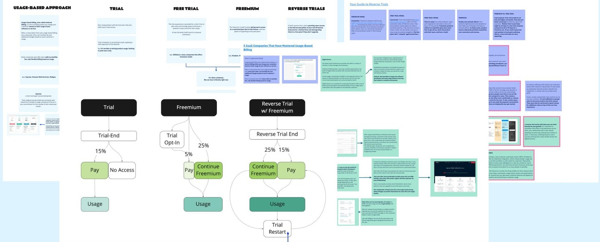
Comparing PLG models, and modelling how a reverse trial would actually flow for Brainly's users.
Alongside that, I ran a competitive analysis of monetization flows in comparable products, from registration through trial expiration, looking at what worked, the strongest parts of those flows, and where the pain points were.
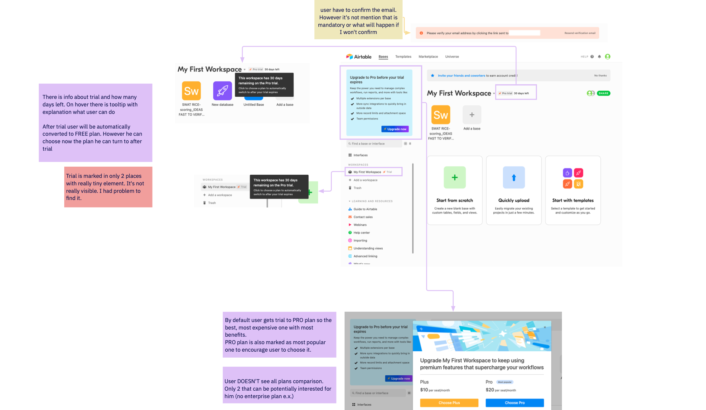
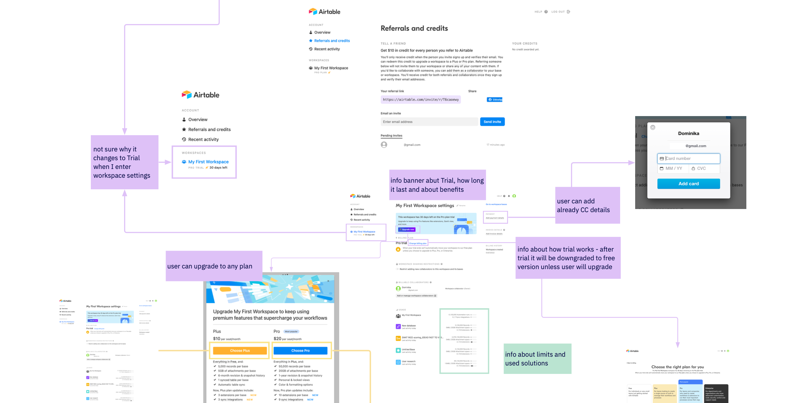
Benchmarking the competition: monetisation models and main flows mapped screen by screen, strengths and weak points called out.
To understand our own users directly, I combined usability testing, a targeted survey, and an analysis of Hotjar session recordings. The survey told a clear story on its own: of 294 respondents, 51.7% said the price was too high relative to the value they saw. Beyond the obvious calls for a lower price or free access, the more interesting pattern was that users wanted more time to actually experience the product's value, and more value itself (more answers, better answers, more benefits overall), before deciding whether it was worth paying for.
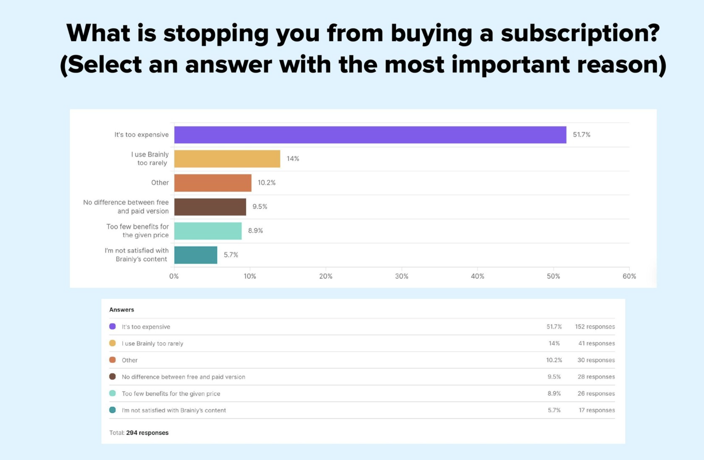
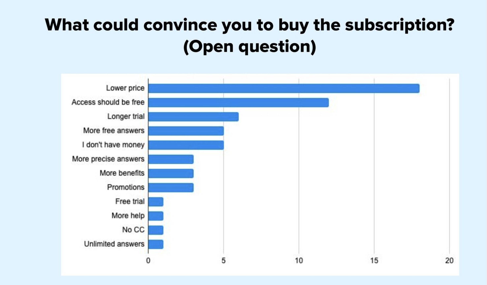
Survey responses.
With the research in hand, I ran the project through a structured discovery process based on the double diamond method: setting the goal and metrics, diverging to generate a wide pool of ideas, then converging in stages, prioritizing the most impactful ideas, defining them more precisely, mapping the flow and the big picture, and finally scoping and planning the actual work.
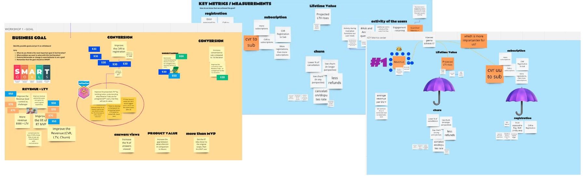
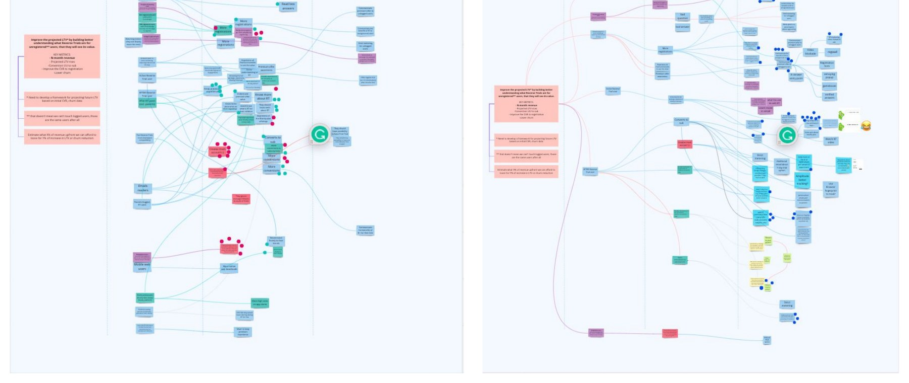
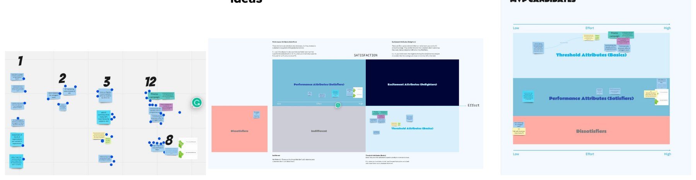
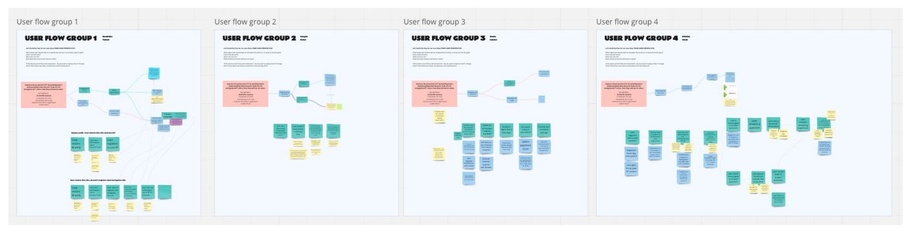
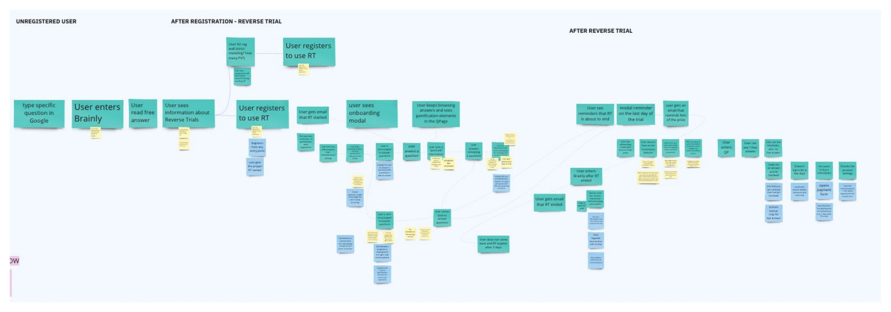
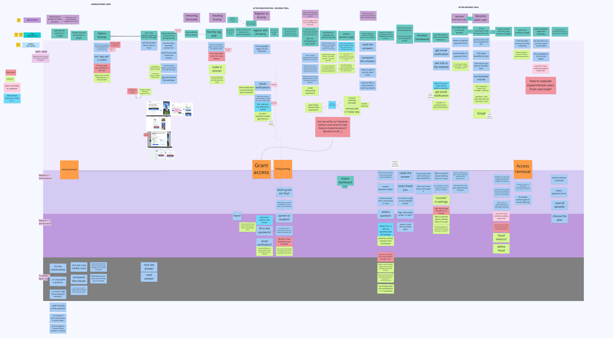
Workshop 1: setting the business goal, SMART goals, and the key metrics we'd use to measure success. Diverging: impact mapping to generate a wide pool of possible ideas. Converging: prioritizing ideas by effort and impact, and shortlisting MVP candidates. Converging: defining the most impactful ideas into four distinct user flow groups. Converging: mapping the full flow, from an unregistered user through registration and the reverse trial. Converging: scoping the work through user story mapping.
The core design decision was the flow itself. I mapped our existing flow, which asked for payment info upfront before users had really experienced the product, against a new reverse trial flow, where users register, land straight in a fully-unlocked trial with a welcome modal and reminder emails, and only hit a real decision point once the trial itself ends.
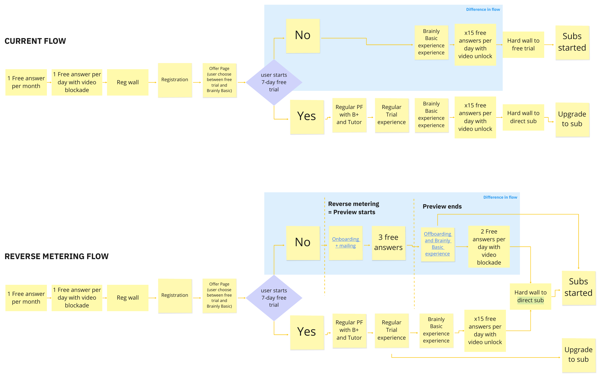
Current flow vs. the reverse trial flow – the key shift was delaying any payment decision until users had already experienced the full product.
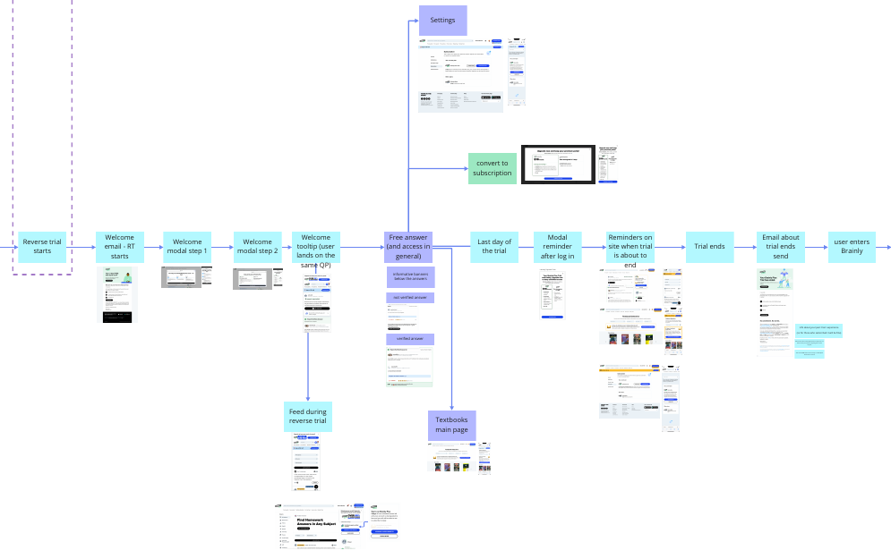
The reverse trial flow mapped in detail, every screen and touchpoint from trial start to re-entry.
Working with a UI designer and copywriter, I turned that flow into complete mockups and interactive prototypes in Figma, covering onboarding, navigation, communication, and every entry point a user could hit along the user journey.
The designs went through five full iterations, each tested with usability testing before release and then validated with A/B tests on production. The data from every round shaped the next iteration, so each version was a direct response to what we'd learned rather than a gut feeling. The screens and designs you see below are just a small snippet of everything we designed and tested, since there was simply too much to fit into one short case study.
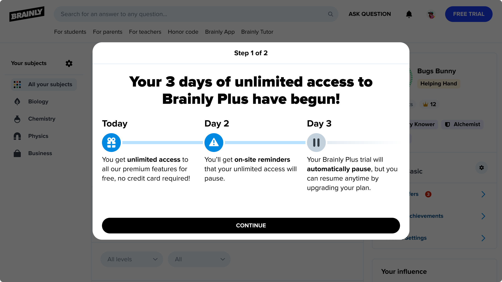
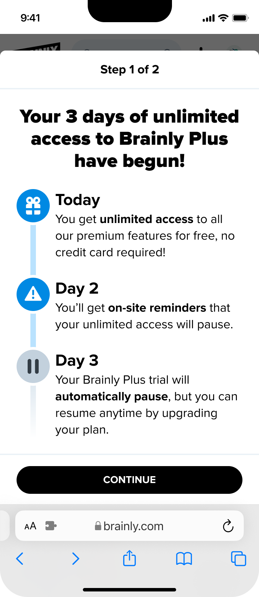
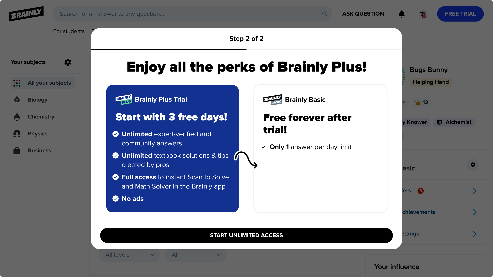
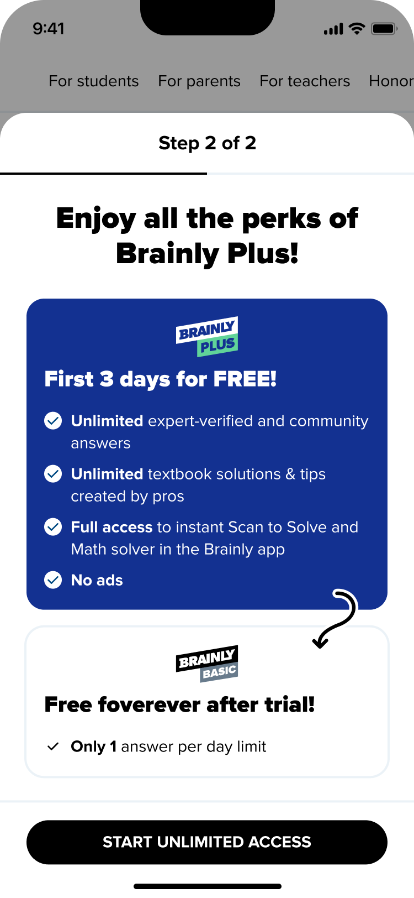
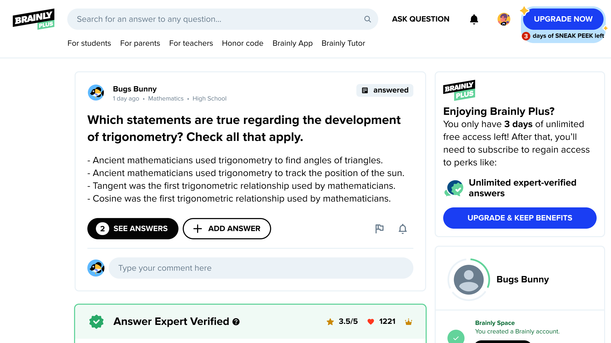
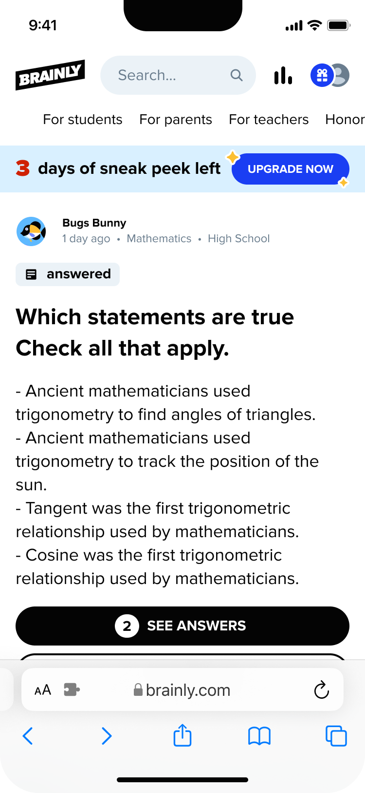
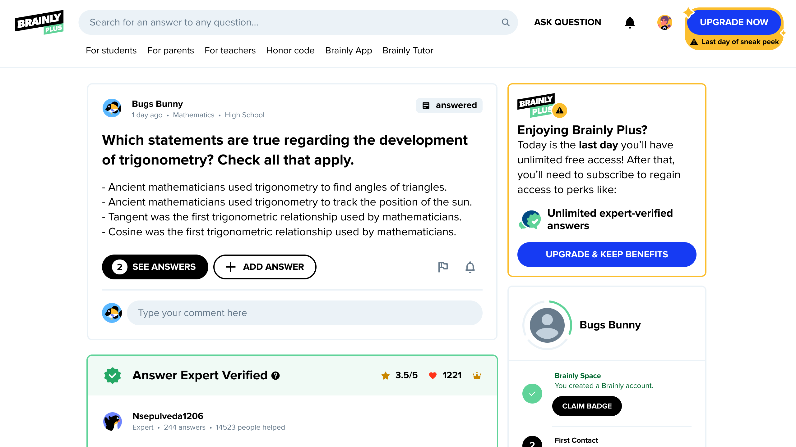
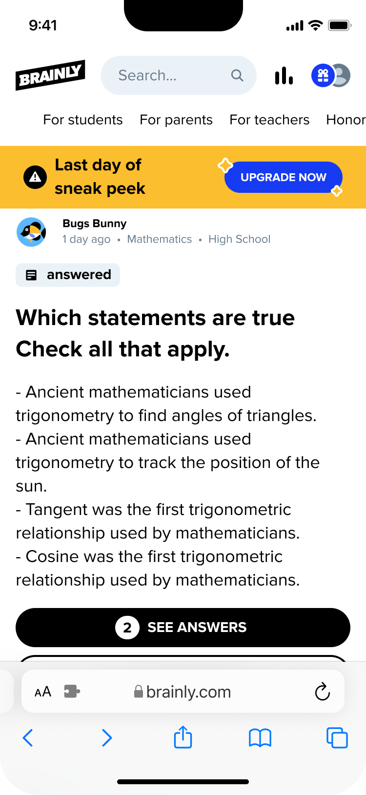
A few of the key screens across the trial experience, desktop and mobile, spanning onboarding through the last day of the trial.
The reverse trial launched as an A/B test against the existing model. The results were genuinely mixed, and I think that's the most useful part of this case study to share honestly.
Overall, reverse trials underperformed the existing flow on net revenue, even though they cut refunds sharply and got users reading more answers along the way. At the same time, we were testing a stricter metering approach, and it consistently performed better on revenue. It confirmed that the product itself wasn't delivering enough value yet, not the trial model. In the end, we dropped the reverse trial approach, shifted focus to stricter metering, and started investing more in our core product features, since that's where the real problem was.